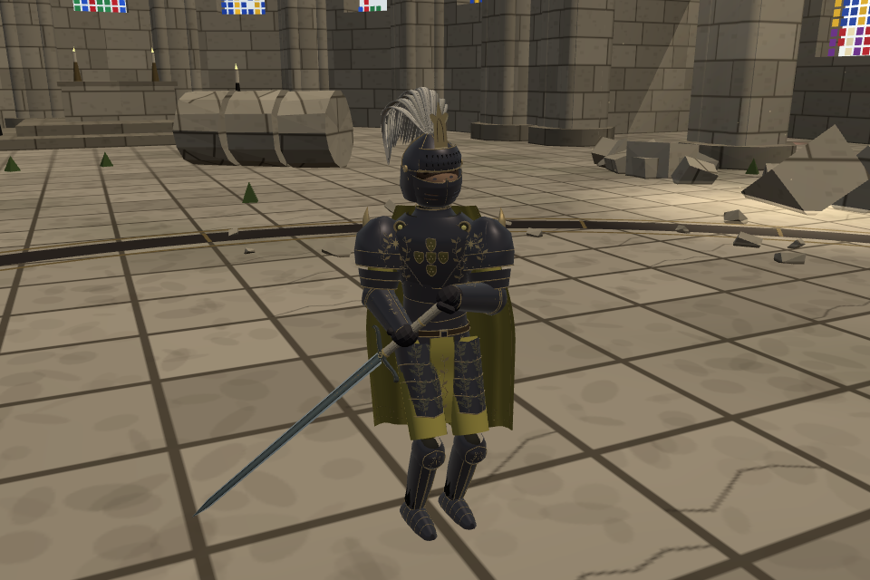
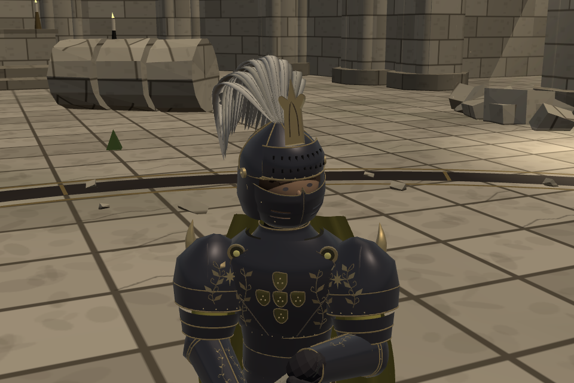

STILLNESS · 왕실 갑주
검은 왕
먹빛 갑옷과 무광의 노란 망토. 눈 주변만 남긴 면갑 아래로 얼굴을 감췄습니다.

실제 게임 화면 · 전투 중 카메라를 가까이 옮겨 촬영했습니다.
티소나와 기존 이베리아 검술을 사용하는 외형 검토판입니다. 대성당은 임시 대련장입니다.
먹빛 철갑무광의 노랑낡은 금상아색 깃
이전과 지금
코·입·턱을 감싸는 곡면 면갑을 내렸습니다. 금장은 반사광을, 노란 천은 부드러운 밝기를 가지도록 재질을 구분했습니다.

실제 게임 확대 · 눈 주변의 열린 공간, 실제로 뚫린 숨구멍과 곡면 면갑
사선과 뒤쪽 보기